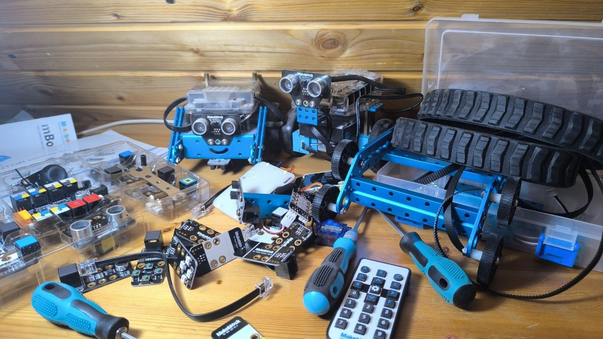
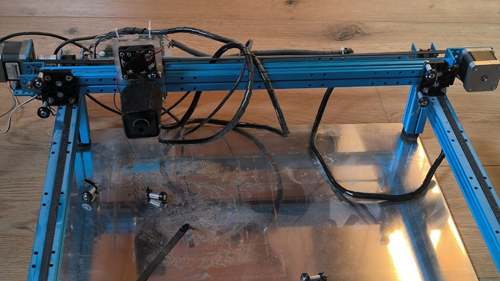
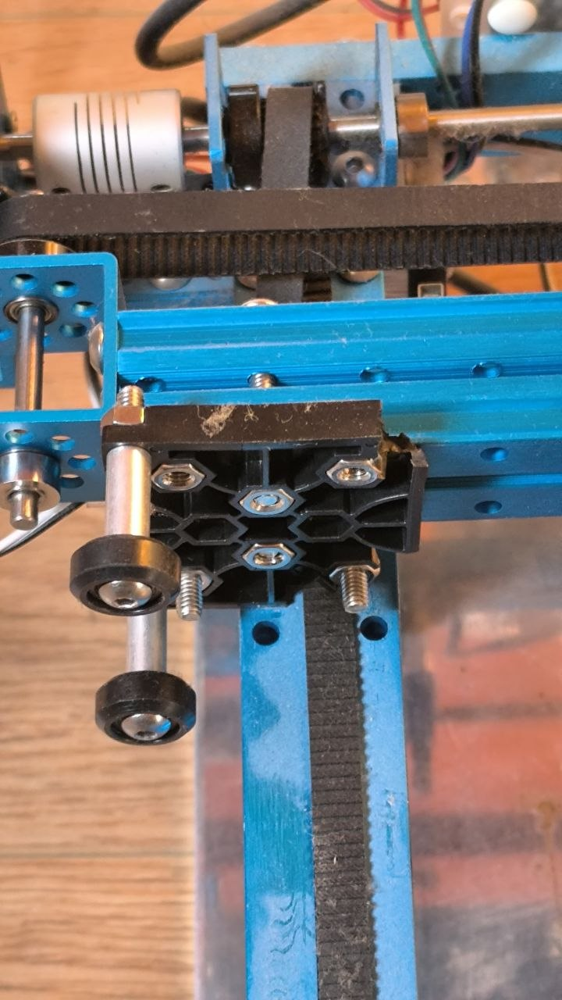

Makeblock: Robots, Modules, and a Broken Laser Cutter
One ecosystem, three very different outcomes
Makeblock is an interesting case because it's really three separate stories under one brand — a robot that got genuinely used and upgraded for years, a modular electronics kit that barely got off the ground, and a piece of current equipment that's presently sitting broken on the shelf. Worth telling honestly, all three.
1. mBot Ranger — the one that actually got used
The mBot Ranger is a configurable robotics platform that can be built into a tank, a car, or a self-balancing vehicle from the same core parts. This one didn't stay stock for long — over time it picked up extra sensors and upgrades well beyond what came in the box, the kind of gradual accumulation that only happens with something that's genuinely still in use. It's the clearest success story in the whole Makeblock shelf.

2. Neuron Inventor Kit — a good idea, too short a runway
The Neuron Inventor Kit is Makeblock's magnetic, snap-together modular electronics system — LED matrix, gyro, servo driver, buzzer, camera module, all interchangeable blocks in the same spirit as littleBits. The idea was genuinely good. In practice, the number of things you could actually build with it ran out faster than the kids' interest did, and once the novel combinations were exhausted, it quietly stopped getting picked up.
That's basically the same story as mCookie, which followed a near-identical arc. It's worth noting this isn't a dead-end niche, though — M5Stack is a genuinely successful modern example of modular, hackable electronics done with enough depth and community behind it to stay interesting. The format works; it just needs enough creative headroom to not run dry in a week.

3. The laser plotter/cutter — currently out of order
The Makeblock laser plotter is real, current equipment — not a past project, just a paused one. It's presently non-functional; a few plastic parts need replacing before it runs again. Filed here for now as an honest "currently broken, on the repair list" entry rather than pretending it's either finished or active.


The pattern, once more
Same shelf, same brand, three different lifespans: one product that earned years of continued investment, one that ran out of road almost immediately, and one waiting on a spare part. It's a good reminder that "modular and hackable" isn't automatically enough on its own — depth and community matter as much as the snap-together mechanism itself.